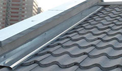
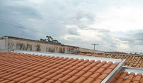
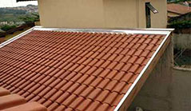
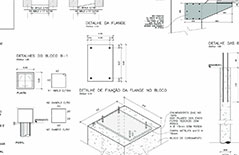

Fabricação e instalação de Rufos em Curitiba, eles são parte fundamental no complemento de sistema de calhas, possuem muita importância para garantir que a vedação do seu telhado, esse fato deve ser levado em consideração na hora da contratação da empresa que fabricará seus rufos em Curitiba, procure profissionais qualificados. Rufos em Curitiba.
 Rufos mal instalados podem comprometer todo o projeto, por infiltrações e corrosões. Rufos revestem as paredes que ficam expostas no seu telhado, eles devem ter muita atenção, garanta que os profissionais que escolher são capacitados para instalação de rufos em Curitiba.
A instalação deve ser planejada e projetada por profissionais, ninguem gostaria que sua casa ou empresa tenha infiltrações isso acarretará além de rachaduras, mofo que apresenta a possibilidade de doenças respiratórias graves.
 Sabemos que existem muitos tipos de telhados, em casas e em empresas, edificações e etc. Praticamente todos precisam de alguns rufos para garantir o sucesso do serviço. Pela sua importância é necessário que procure produtos de alta qualidade, é necessário procurar uma empresa que instale rufos em Curitiba sejam fabricados das melhores chapas do mercado.
 Os telhados que possuem um ponto alto, em que todas as telhas se agrupam e descem até as beiradas. Portanto, quem realiza a fabricação e instalação de rufos sabe que eles precisam ser duas vezes maiores do que as telhas que se localizam nas laterais do telhado, só assim ele irá garantir total vedação contra água da chuva.
Alguns telhados precisam inclusive de rufos duplos geralmente os telhados paralelos, eles são semiabertos sendo assim a fabricação e a instalação destes rufos semiabertos um pouco diferentes dos comuns, por eles serem fixados ao cimento das paredes, nestes casos eles só podem ser colocados quando a obra ainda está em construção.
Somos uma empresa respeitada e reconhecida no segmento de Rufos em Curitiba, diferenciada pela fabricação de Rufos e instalação própria.
 A melhor opção é escolher uma empresa que fabrique e instale os rufos, assim poderá ter garantia tanto do material empregado quanto da instalação. É comum Calheiros em Curitiba instalarem os rufos, apresentar problemas e dizerem que o problema é no material. No caso da COOPERMONT Calhas. Calhas em Curitiba.
Sergurança e garantia de um ótimo serviço. Rufos e Calhas em Curitiba
Mais de 20 anos de tradição não são por acaso. Referencia quando fala-se, calhas em curitiba
Referencia em instalação de calhas em curitiba e região!
Todos os direitos reservados e privados | EmpresarialWeb